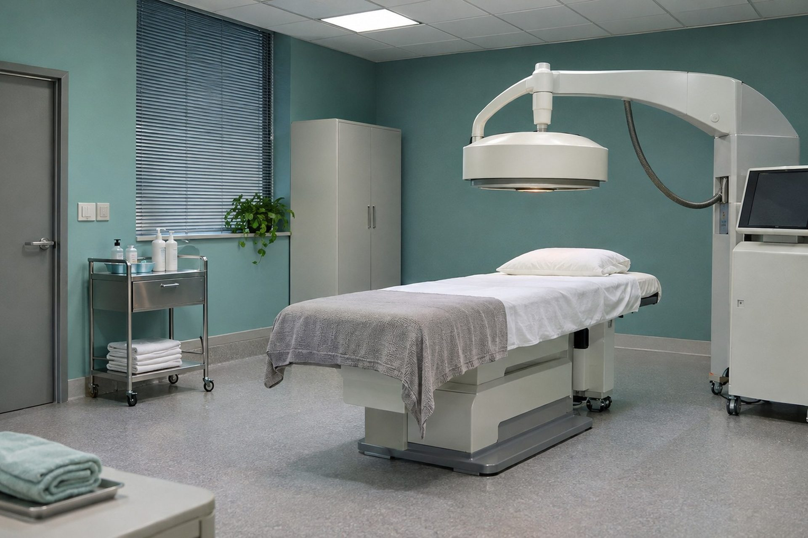
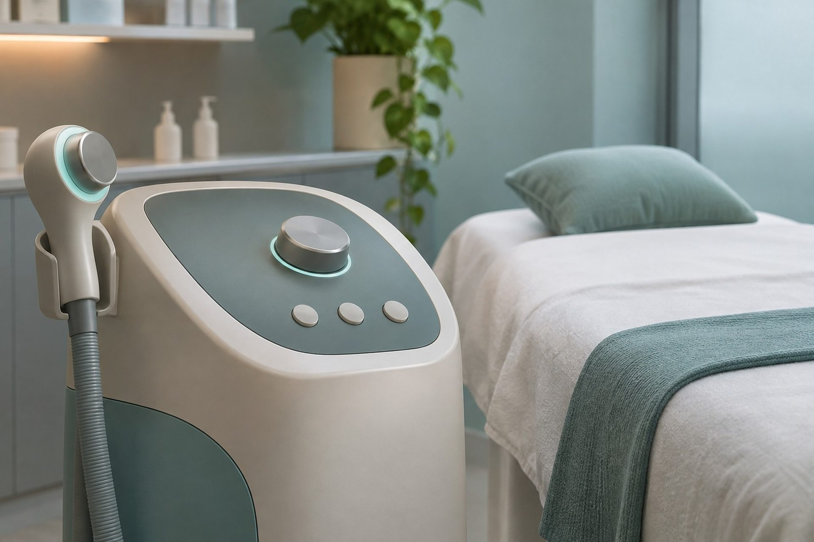
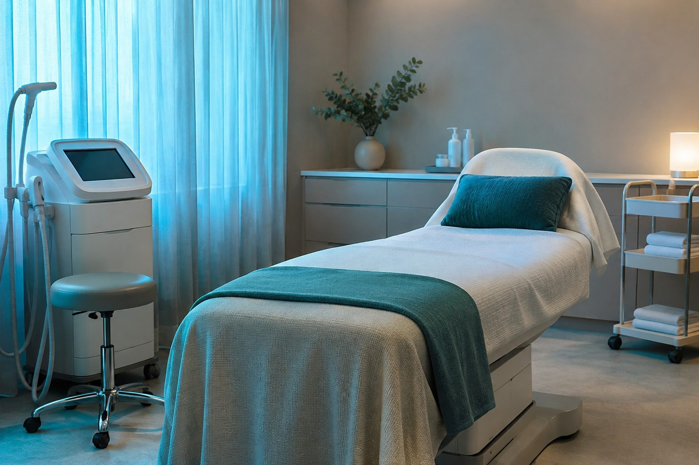

고주파 온열치료
고주파 온열치료 상담과 이용 정보를 안내합니다.
고주파 온열치료 상담과 이용 정보를 안내합니다.
상담 순서, 준비 자료와 방문 전 문의 사항을 안내합니다.
고주파 온열치료 상담
상담 예약, 자료 준비, 방문 일정과 비용 문의 방법을 확인해 주세요. 진료 관련 판단은 담당 의료진과 상담해 주세요.



진료 상담
현재 진료와 검사 일정, 이전에 받은 치료 내용을 정리해 상담에 알려 주세요. 치료와 관련해 문의하고 싶은 점은 방문 전에 메모해 두면 상담 중 확인하기 편합니다.
진행 여부와 필요한 확인 사항은 담당 의료진이 기록을 살펴본 뒤 안내합니다. 소개 자료만으로 개인의 진료 계획이나 적용 여부를 판단하지 마세요.
- 현재 진료와 검사 날짜
- 상담에서 물어볼 항목
기기와 방문 안내
사용 장비, 방문 시간, 준비물과 복장에 관한 사항은 예약 과정에서 병원에 문의해 주세요. 안내받은 내용이 기억나지 않거나 달라진 경우에는 방문 전에 다시 확인해 주세요.
치료 일정과 다른 진료 일정이 겹치지 않는지 확인해 주세요. 일정 변경이나 도착 지연이 예상되면 가능한 한 미리 대표 전화로 연락해 주세요.
- 장비와 복장 문의
- 병원 도착 시간
건강 정보 전달
최근 새로 복용하기 시작한 약이나 진료 일정 변경이 있으면 방문 때 알려 주세요. 삽입형 의료기기 등 진료에 필요한 건강 정보를 전달할 사항이 있는지 의료진에게 문의해 주세요.
치료 전후 주의 사항은 개인별 진료 내용에 따라 다를 수 있으므로 담당 의료진에게 확인해 주세요. 안내받은 내용을 이해하기 어렵다면 다시 설명해 달라고 요청할 수 있습니다.
- 최근 약 변경 내용
- 진료에 전달할 건강 정보
비용과 사후 문의
비용과 적용 항목은 진료 내용과 기준에 따라 달라질 수 있습니다. 예약 전에 현재 비용과 결제 방법을 확인해 주세요.
방문 뒤 일정이나 안내 내용에 관해 문의할 점이 있으면 병원으로 연락해 주세요. 갑자기 상태가 달라지거나 긴급한 지원이 필요하면 응급의료기관 또는 119에 연락해 주세요.
- 비용과 결제 방법
- 방문 뒤 연락처
방문 전 준비
예약 시간과 치료실 위치는 방문 전에 접수 담당자에게 확인해 주세요.
금속 장신구와 휴대 전자기기는 치료실에 들어가기 전에 보관해 주세요.
치료 부위에 상처나 화상 자리가 있으면 시작 전에 의료진에게 알려 주세요.
땀에 젖을 수 있으므로 필요하면 갈아입을 옷을 준비해 주세요.
- 장신구와 전자기기 보관 위치
- 피부 상태와 복용약 전달
- 치료실 도착 시간 확인
치료 중 알림 방법
시작 전 담당자가 패드 위치와 온도 확인 방법을 설명합니다.
자세를 바꾸거나 쉬어야 할 때 사용할 호출 방법을 먼저 확인해 주세요.
열감, 통증 또는 불편이 생기면 참지 말고 바로 담당자에게 알려 주세요.
자주 묻는 질문
상담 때 어떤 기록이 필요한가요?
현재 치료 일정과 수술·약물·방사선 치료 시기, 관련 검사 자료를 준비해 주세요.
영상 자료도 가져가야 하나요?
최근 영상 검사와 판독 결과가 있으면 날짜가 보이도록 준비하고 열람 방법을 미리 문의해 주세요.
몸에 삽입한 기기가 있으면 알려야 하나요?
전자 의료기기나 금속 삽입물의 종류와 위치를 치료 전에 의료진에게 알려 주세요.
피부 상태도 확인하나요?
치료 부위에 상처나 피부 변화, 감각 저하가 있으면 시작 전에 담당자에게 설명해 주세요.
복용약 목록이 필요한가요?
처방약과 보충제, 알레르기 정보를 준비해 상담 때 공유해 주세요.
장비 사용 방법은 언제 설명하나요?
진료 후 진행하기로 한 경우 담당자가 절차와 준비 방법, 연락 방법을 설명합니다.
치료 중 불편을 어떻게 알리나요?
열감이나 통증, 자세 불편이 생기면 참지 말고 즉시 담당자에게 알려 주세요.
치료 뒤 무엇을 확인하나요?
귀가 전에 관찰할 점과 문의가 필요한 상황, 다음 진료 시점을 확인해 주세요.
다른 진료와 같은 날 받을 수 있나요?
진료 일정과 병행 여부는 담당 의료진이 기록을 확인한 뒤 정합니다.
치료 시간과 비용은 어디서 확인하나요?
방문별 시간과 비용, 보험 적용 항목은 치료 결정 전에 병원에 문의해 주세요.
치료 장비와 부위
고주파 온열 장비를 사용하는 경우 담당 의료진이 적용 부위와 장비 위치를 확인합니다. 부위가 바뀌었거나 최근 시술·수술을 받은 곳이 있으면 준비 단계에서 알려 주세요.
패드 위치 확인
장비 패드가 닿는 위치와 고정 방법을 담당자가 설명합니다. 접촉 부위에 상처, 발진, 압박 통증이 있으면 시작 전에 말해 위치와 진행 여부를 확인해 주세요.
온도 확인 방법
치료 중 확인하는 온도와 상태 확인 방법은 장비와 진료 계획에 따라 안내됩니다. 담당자가 확인하는 동안 열감이나 따가움, 통증이 느껴지면 참지 말고 바로 알려 주세요.
금속과 전자기기
치료 전에 몸에 착용한 금속류와 전자기기 중 빼야 할 항목이 있는지 직원에게 확인해 주세요. 몸 안에 삽입된 기기나 금속물이 있다면 종류와 위치를 의료진에게 먼저 알려 주세요.
치료 중 자세와 연락
치료 자세를 유지하기 어렵거나 장비에 닿는 부위가 불편하면 담당자에게 알려 주세요. 치료실 안에서 직원을 부르는 방법과 중단을 요청하는 방법을 시작 전에 확인해 주세요.
치료 종료 뒤 피부 확인
장비를 제거한 뒤 접촉 부위의 피부 상태를 담당자와 확인해 주세요. 귀가 뒤 붉어짐이나 불편이 나타나면 부위와 시작 시각을 기록해 병원에 문의해 주세요.
치료실 도착 뒤 확인
접수에서 예약자와 치료 일정을 확인한 뒤 담당자의 안내를 받아 치료실로 이동해 주세요. 치료 부위가 달라졌거나 최근 수술·시술을 받았다면 시작 전 의료진에게 알려 주세요. 안내받은 준비와 실제 절차가 다르면 장비를 사용하기 전에 직원에게 확인해 주세요.
착용 물품과 전자기기
치료 전 시계, 장신구, 벨트 등 금속이 포함된 물품을 어떻게 보관할지 직원에게 물어봐 주세요. 전자기기는 반입과 사용 기준을 먼저 확인해 주세요. 몸에 착용한 물품 중 제거할 수 없는 것이 있으면 종류와 위치를 의료진에게 전달해 주세요.
패드가 닿는 피부 확인
치료 예정 부위에 상처, 발진, 멍 또는 감각 변화가 있으면 언제부터 있었는지 설명해 주세요. 피부에 바른 약이나 보호제가 있으면 제품과 사용 시점을 알려 주세요. 패드가 닿는 위치와 고정 방법은 담당자의 설명을 듣고, 압박감이나 통증이 있으면 바로 전달해 주세요.
온도와 몸 상태 전달
치료 중 온도와 상태를 확인하는 방법은 시작 전에 담당자에게 설명을 요청해 주세요. 열감, 따가움, 통증, 어지러움 또는 자세를 유지하기 어려운 상황이 생기면 참지 말고 직원에게 알려 주세요. 호출 장치가 있다면 위치와 사용 방법을 미리 확인하고, 장비 설정은 직접 조정하지 마세요.
치료가 끝난 뒤
장비를 제거한 뒤 접촉 부위의 피부 상태와 귀가 전에 확인할 항목을 담당자와 살펴봐 주세요. 귀가 후 붉어짐이나 불편이 나타나면 부위, 시작 시각, 지속 시간을 기록해 병원에 문의해 주세요. 다음 진료와 검사 날짜, 연락할 부서도 방문 전에 확인해 두세요.